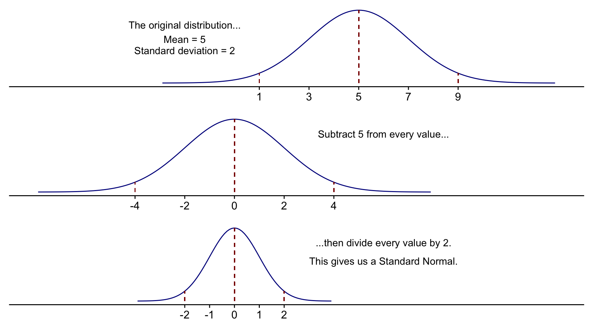
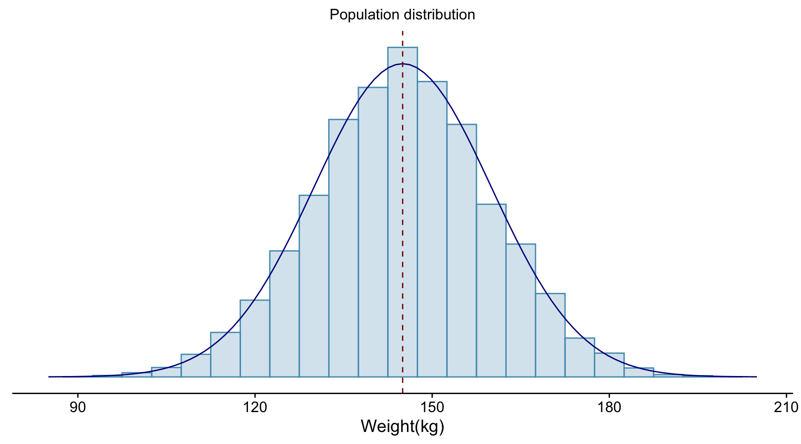
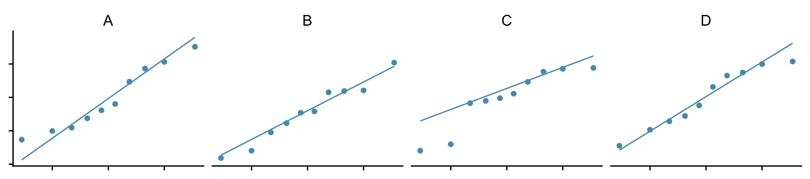

Chapter 4 A primer in statistics"
Based on the very helpful revision chapter in Modern Statistics for the Life Sciences, Alen Grafen and Rosie Hails, OUP.
4.0.1 Populations and samples
It is rarely possible to get an exact answer to a question. Normally we have to make do with an estimate, and this may vary from a rough estimate to a more precise one.
One of the first tasks of statistics to state this in more precise terms.
Suppose, for example, we wanted to know the average height of adult women between the ages of 25 and 35 in the United Kingdom. It is quite impossible to measure the height of every single woman of that age. Instead we must content ourselves with taking a sample, finding the average height of women within that and hoping that it is representative of the whole population.
A sample is a random selection from within a population. For this to be the case the population needs to be precisely defined, since our sampling strategy will depend on this.
Having taken our sample we compute the mean by summing and dividing by the number of values:
// {y}= //
This is our estimate of the true population mean, \(\mu\). It is similar when we do an experiment. Measurements in an experiment inevitably involve error, and so we can think of the data readings we actually take as being a sample from the population of all the readings that could have occurred. The mean value that we get at the end from our data is thus an estimate of the true mean \(\mu_\text{A}\), which we would only have obtained if there was no error involved in the experiment.
4.0.2 Three types of variability: of the sample, of the population and of the estimate.
4.0.2.1 Variability of the sample
As well as the mean, we would like to know how variable our sample is. This gives us an idea as to how precise our estimate of the population mean is. Is it a rough one, or a precise one?
Two samples can have the same mean but very different variabilities. For example if the results for a class of n=30 students for a test in maths ranged from 40 to 70 while those for a test in English ranged from 50 to 60, then both might have a mean of 55, but, clearly, results in maths would be more variable than those in English.
For any individual score in either test, we can calculate its deviation from the mean of the score for that test, where
\[ \text{deviation} = \text{datapoint} - \text{mean} \] If we sum the deviations of the scores from each test from their respective means, we would find that the absolute value of these deviations tend to be bigger for the maths test than for the English test. For both tests, however, the sum of the deviations would be zero, because of the definition of the mean as the central point, but if the deviations are squared and summed, we then get a measure of the variability of each dataset around its mean.
| \(\bar{y}\) | \(s^2\) | \(s=\sqrt{s^2}\) | |||
|---|---|---|---|---|---|
| English scores | \(\frac{1}{n}\Sigma y_i=55\) | \(\Sigma \left(y_i-\bar{y}\right)=0\) | \(\Sigma (y_i-\bar{y})^2=638\) | \(\frac{1}{n-1}\Sigma (y_i-\bar{y})^2=\frac{638}{29}=22.0\) | \(\sqrt{22.0}=4.7\) |
| maths scores | \(\frac{1}{n}\Sigma y_i=55\) | \(\Sigma \left(y_i-\bar{y}\right)=0\) | \(\Sigma (y_i-\bar{y})^2=2219\) | \(\frac{1}{n-1}\Sigma (y_i-\bar{y})^2=\frac{2219}{29}=76.5\) | \(\sqrt{76.5}=8.75\) |
In this case, a comparison of the sums of squares is valid, since the two datasets have the same size. In general though, a larger dataset will have a larger sum of squares, so for a valid comparison between unequally sized datasets, a measure that is independent of the size of the dataset is required.
To get this, all we need to do is take account of the sample size. We used n data points to define the mean, then the same n datapoints, plus the mean itself, to define the variability around the mean. But from the way in which the mean is calculated, the deviations must sum to zero. This means that we have only n-1 independent pieces of information about how the sample varies around the mean. Hence, our final measure of the variability of a data set, which we call the variance and denote as \(s^2\), is found by dividing the sum of squared deviations by n-1, not by n.
\[ s^2=\frac{\Sigma{\left(y_i-\bar{y}\right)^2}}{n-1} \]
The number of independent pieces of information that contribute to the calculation of a statistic is called the degrees of freedom.
Often, we would like a measure of variability that has the same units as the data itself. The variance does not, but we remedy that by taking its square root to find the standard deviation \(s\) of the dataset.
4.0.2.2 Variability of the population
Just as we cannot know the true mean \(\mu\) of a population, but can only estimate it from the mean \(\bar{y}\) of a sample that we draw from that population, so we cannot know the true variance of a population. Nevertheless, it is useful to define it, and it is frequently referred to as \(\sigma^2\) (“sigma squared”). Our best estimate of it is our sample variance \(s^2\).
A definition of it is that it is the expected squared deviation around the true mean for all individuals in the population.
4.0.2.3 Variability of the estimate
Having obtained our estimate \(\bar{y}\) of the true mean \(\mu\) of a population, we would like to know how accurate it is. To answer this we will briefly discuss Normal distributions.
4.0.2.3.1 The Standard Normal Distribution
Many continuous attributes (eg weight, height, width) of a population are scattered around a mean value in such way that, if you plotted a histogram of the values, it would have a shape that is approximately bell-shaped and symmetric and well described by a Normal distribution (the reasons for this are interesting, but beyond the scope of this document). Such a distribution is described by two parameters - its mean (middle value) and its variance (spread). A standard normal distribution is simply a normal distribution with a mean of 0 and a variance (and therefore a standard deviation, which is the square root of the variance) of 1. Such a distribution is sometimes referred to as a \(Z\) distribution.
Any normal distribution can be converted to a standard normal distribution by doing two things. Suppose a variable \(Y\) follows a normal distribution, with mean 5 and standard deviation 2. First we subtract the mean from every value. This will have the effect of moving the whole distribution leftwards on the x-axis by 5 units, the mean value of Y, so that it is centred on 0. Then, we divide each value by 2, the standard deviation of Y. This will have the effect of squishing the distribution inwards, giving it a new standard deviation of 1. The result will be a standard normal, centred at 0, with standard deviation 1. The process of carrying out these two operations is known as standardising.

In summary, in order to convert a variable Y that is normally distributed with mean \(\mu\) and standard deviation \(\sigma\), to a standard normal z, we subtract the mean then divide by the standard deviation:
\[ z=\frac{Y-\mu}{\sigma} \]
Why would we want to do this? The answer is that the standard normal is an example of a probability density function (or pdf for short). Such functions have particular properties that are useful to us as scientists. In particular, it is straightforward to calculate what proportion of any set of observations described by a pdf fall within or beyond a certain number of standard deviations of the mean.
The total area under a standard normal, as for any pdf, is 1, since it is a certainty that the random variable it describes takes some value or other.
The area under it to the right of zero and the area under it to the left of zero are both 0.5, since the distribution is symmetric about zero. This tells you that if you had a random variable that was described by a standard normal, then there would be a 50% chance that it was positive, and a 50% chance that it was negative. In general, if you take a random individual from a population and measure the value of some attribute (such as its height) that is well described by a normal distribution, then there would be a 50% chance that the value for this individual is less than the population mean, and a 50% chance that it is greater.
The area under the distribution beyond a distance roughly two standard deviations (actually, 1.96) either side of the mean totals 0.05, or 5% of the total area under the curve. This means that if, again, we have a population for which some attribute is well described by a normal distribution, then roughly 95% of individuals will have a value of that attribute that falls within two standard deviations of the mean, and roughly 5% of them will fall beyond that. Or, put another way, if you took a random individual from the population, there is a 95% chance that its value for this attribute would be within about 2 standard deviations of the mean, and a 5% chance that it would be more than about 2 standard deviations greater or less than the mean.

Of particular practical importance, if a dataset is normally distributed, then about 68% of the observations fall with one standard deviation of the mean, 95% fall within 1.96 standard deviations, about 96% fall with two standard deviations, and about 99.7% (ie practically all of them) fall within three standard deviations. The plot below illustrates this.
So much for an ideal normal distribution. A real data set drawn from a population that is approximately normally distributed would have some scatter, the more so the smaller the size of the sample. For such a sample we would find that approximately two thirds of the data set is within one standard deviation of the mean, 95% are within approximately two standard deviations and pretty much all of them are within three standard deviations.
4.0.2.3.2 Accuracy of the estimate
We are interested in the population. We want to know its true mean \(\mu\), but what we have as our best estimate of this is the mean \(\bar{y}\) of a sample of size n that we drew from the population. If we took another sample from the population of the same size, we would get a different sample mean, and so on again and again, if we had the time and resources to repeatedly take sample after sample. So our sample mean is itself a random variable \(\bar{Y}\), drawn from a population of all possible sample means. If we drew samples of the same size n many times from our population of interest, the means \(\bar{y}\) of these samples would themselves form a distribution, the so-called sampling distribution, and the mean of this we would hope, would be the true mean \(\mu\) of the population.
The bigger the variance \(\sigma^2\) of the population, the more we would expect our estimate to differ from the true mean, and the less variable the population was, the closer we would expect our estimate to be to the true mean. Similarly, if we took a large sample then our estimate is likely to be closer to the true mean than if we took a small sample.
If we take these observations together, what we find is that the variance of the distribution of our estimates is \(\sigma^2/n\), and so the standard deviation of our estimate is the square root of this ie \(\frac{\sigma}{\sqrt{n}}\). This is sometimes called the standard error of the mean. This gives us an idea of how precise our sample mean is as an estimate of the true mean.
4.0.2.4 Example
Suppose the population of grey seals around the coast of south west England includes 10,000 adult females, whose weights are normally distributed and in the range 100 - 190 kg. Let this be our ‘population of interest.’ The weights of individuals in this population are approximately normally distributed with a mean value of 145 kg, and a standard deviation of 15 kg.
Note that in reality we would not know the mean or standard deviation of this population, or how many seals there were in total or whether the weights of adult females within it were normally distributed (or distributed any other way).
A histogram of the weights of the entire population would look something like this:

Suppose we wanted to know the mean and standard deviation of the weights of adult female grey seals in this population. Clearly, we could not find the true value since that would require weighing every seal in the population, which is impossible, but we could estimate the values by weighing all seals in a manageable sample that we hope is representative of the whole population. Suppose our sample were 100 randomly chosen adult female seals.
In reality, that would probably be the only sample we could get, and so our estimates \(\bar{y}\) and s of the true mean \(\mu\) and true standard deviation \(\sigma\) respectively would be based entirely on that one sample.
To get an idea of how accurate our estimate is, imagine we could measure such samples of 100 seals randomly selected from the population many, many times over. Each sample would have a slightly different mean. Let us plot the distribution of some of those samples and superpose on top of them the ‘normal distribution’ curve that we know is a good representation of the weights of adult females in the whole population. (We know this because this is a simulation. In truth, we wouldn’t.) For each sample, we display its mean \(\bar{y}\) and standard deviation s.
Notice how all these sample distributions have roughly the form of a normal distribution but that each one is in detail different from the others. This is the reality of sampling from a population - every sample will be different - but not completely different. All those shown have roughly the same mean, shown by the dashed line, roughly the same standard deviation and roughly the same shape.
Note too that these samples are drawn from a population (we happen to know, because we created it!) whose mean value \(\mu\) is 145 and for which the standard devation \(\sigma\) is 15. In an actual study, we would have taken, most likely, just one sample, which could have been any of those you see above. The mean \(\bar{y}\) and standard deviation \(s\) of that sample would have been our best estimate of \(\mu\) and \(\sigma\).
Below we contrast histograms of the population, a single sample of size 100 drawn from the population, and the so-called sampling distribution. That is, the distribution of the means of many samples of size 100 drawn from the population. Of these, the middle one, that of a single sample, is the only one we could get in practice.
In this case, the weights of the population are very close to being normally distributed. The mean is 145 kg and the standard deviation is 15 kg. You can see that the whole population has a weight within two or three standard deviations of the mean. In practice, we do not usually know either that the parameter of interest, in this case weight, definitely is normally distributed, or the mean and standard deviation of that distribution.
The weights of one sample of size 100 drawn from the population are also approximately normally distributed with a mean and standard deviation approximately equal to the that of the population. In practice, we might often only have only this one sample, so these would be our best estimates of the population mean and standard deviation and our judgement as to whether the population was normally distributed would be based on this one sample distribution alone. With small samples, it can often be hard to tell, just by looking at this histogram, whether the data have been drawn from a population that is normally distributed.
(In practice, we might also use other considerations - such as whether the data were a simple random sample and whether there were no outliers, and so on.)
The sampling distribution is in practice a hypothetical distribution, since we cannot normally take many samples, each here of size 100, find the mean of each and plot the distribution of these. But if we could, this is what we would get. The mean of the one sample that we actually got is somewhere within this distribution and the true mean of the population is at the centre of it. A very interesting and useful thing about this distribution is that it will very likely be normally distributed, even if the population distribution was not, provided the sample size is large enough, and it is narrower than the population distribution. The larger the sample size, the narrower it is. These are handy facts, since they together mean that its width gives us an idea of the precision of our sample mean as an estimate of the the true mean.
Some facts of interest about this distribution are:
it is normally distributed (and, if the sample sizes are large enough and the samples independent of each other, it probably would be even if the underlying distribution of the population were not a normal distribution.
its mean is the true mean \(\mu\) of the population.
its standard deviation is narrower than that of the population as a whole or of one sample. If the standard deviation of the population is \(\sigma\), where \(\sigma = 15\)kg in this case, and the samples each had size n, where n=100 in this case, then the standard deviation of this sampling distribution is \(\frac{\sigma}{\sqrt{n}}\). So in this case, the standard deviation of this distribution is 1/10th that of the underlying population.
if our sample size had been bigger, the sampling distribution would have been even narrower and so our estimate of the true mean would have been more precise. That is the benefit of having a bigger sample size.
Now, here is the really interesting thing about this distribution. It tells us about the precision of our estimate \(\bar{y}\) that we got from our one sample of 100 seals of the true population mean \(\mu\). Look at that sampling distribution. The true mean is somewhere in there, as is our sample mean. So whatever this value \(\bar{y}\) is that we got from our sample, we know it is within the width of this distribution of the true mean. And how wide is this distribution? Well, since it reliably has the shape of a normal distribution, we know the answer to that. Roughly 95% of the values on this distribution are within two of its standard errors of the middle value \(\mu\). This standard error, remember, is \(\frac{\sigma}{\sqrt{n}}\), where \(\sigma\) is the population standard deviation, our best estimate of which is the standard deviation \(s\) of our sample. Our sample mean \(\bar{y}\) is our best estimate of this middle value, so we end up being able to say something like the following:
\[ \text{...the true mean = }\bar{y}{\text{ (our sample mean)}}\pm 2\times \frac{s{\text{ (our sample standard deviation)}}}{\sqrt{n}} \]
We would call this range the 95% confidence interval for the thing we wanted to measure - in this case, the mean weight of adult female grey seals in the population of them around the south west of England.
What we mean by this is that if we repeatedly took a sample of 100 seals from the population and constructed the confidence interval for the mean in this way, then the true value would be within the interval 95% of the time.
Let us explore confidence intervals in more detail…
4.0.3 Confidence intervals: a way of precisely representing uncertainty
We know that our estimate \(\bar{y}\) of the population mean \(\mu\) comes from the distribution of all possible \(\bar{y}\) that are distributed around \(\mu\) with a variance of \(\frac{\sigma^2}{n}\), and thus a standard deviation of \(\frac{\sigma}{\sqrt{n}}\). Let us now find the confidence interval from our data. This is the range of possible values for the true population mean (which we don’t know, remember) that cannot be rejected at the 5% significance level.
Parameters that have been estimated with great confidence will have a narrow confidence interval associated with them, while parameters about which we have less information will have a wide confidence interval.
From the properties of the standard normal distribution, we know that 95% of all such \(\bar{y}\) will lie within 1.96 standard deviations of \(\mu\), where the relevant standard deviation is that of the sampling distribution - the distribution of \(\bar{y}\). That means that 5% will not!
This is illustrated below, where, for example, we show the true mean weight \(\mu\) of adult female grey seals in south west England as a dotted line and either side of that, estimates of that obtained as the means from 20 samples, each of 100 seals, with their corresponding 95% confidence intervals. Note how nearly all of these confidence intervals do capture the true mean, but that one (in this case) does not.
Hence we can say that, for 96% of the time:
\[ \mu-2\frac{\sigma}{\sqrt{n}} \lt \bar{y} \lt \mu+2\frac{\sigma}{\sqrt{n}} \]
In practice, by convention, we are interested in a confidence level of 95% rather than 96%. This changes the 2 in the above formula to 1.96 - the confidence level is slightly lower, so the confidence interval is slightly less wide. Further, we would rather instead state a confidence interval for \(\mu\) in terms of \(\bar{y}\), rather than as above, so we rejig the last equation to give:
\[ \bar{y}-1.96\frac{\sigma}{\sqrt{n}} \lt \mu \lt \bar{y}+1.96\frac{\sigma}{\sqrt{n}} \]
This is now our 95% confidence interval for data drawn from a normally distributed population: the range of values that the true mean \(\mu\) could take and be consistent with the data at the 95% level.
But there is a hitch…
4.0.4 The big hitch with confidence intervals - why we use a \(t\)-distribution
The trouble with the previous expression, as a way of stating the confidence interval for a parameter such as the mean of some measure of a population, is that it requires that we know \(\sigma\), the true standard deviation of of the population, and we don’t know it exactly. All we have is an estimate of it, ie \(s\), the standard deviation of the sample. So there is some uncertainty in our knowledge of \(\sigma\), just as there is in our knowledge of \(\mu\) and this results in our 95% confidence interval for \(\mu\) being somewhat wider than the value given above.
The way this extra uncertainty can be accommodated is by modelling our data not by a normal distribution, but by a t-distribution. This is similar to a normal distribution in that it is symmetrical, but it is lower and wider, with heavier tails on either side - which means that extreme values are more likely than for a normal. It is characterised by a centre, a scale and a degrees of freedom parameter df that can range from 1 to \(\infty\) and which is one less than the number of data points in the sample: df =n-1. The precise shape of the t-distribution depends on df. For small df t distributions have very heavy tails, but as the sample size increases and df rises, so the t-distribution becomes taller and narrower and more and more like a normal distribution, until, for df greater than 30 or so, the two are more or less indistinguishable. This reflects the fact that, the more data points we have, the more precise our estimate s becomes of the population standard deviation \(\sigma\).
This is illustrated below, where we see t-distributions for df = 1, 3, 10 and 30 against a standard normal distribution.
To calculate the 95% confidence interval now we need to know how many standard deviations of the t-distribution we need to go either side of the mean in order to encompass 95% of the population. We call this the critical t-value \(t_\text{crit}\). For a normal distribution, remember, we had to go 1.96 standard deviations either side in order to do this. For a t-distribution, how far we need to go will depend on the degrees of freedom df. For a low value of df the distribution has fatter tails so we need to go further out, but we need go less far as df increases and the t-distribution becomes narrower until, when df = 30 or so, we need only go as far as we would for a normal distribution, ie 1.96 standard deviations.
This is the effect of having a small sample: for such a sample our estimate of the true mean is less precise than if we had a larger sample, so the confidence interval, the range of values in which we are (say) 95% confident that the true value lies, is correspondingly wider.
For df = 10, we find that \(t_\text{crit}\) = 2.228
So, now, for small samples, we would write our confidence interval as
\[ \bar{y}-t_\text{crit}\frac{s}{\sqrt{n}} \lt \mu \lt \bar{y}+t_\text{crit}\frac{s}{\sqrt{n}} \]
or, put another way,
\[ \mu= \text{estimate}\pm t_\text{crit}\times\text{standard error of the estimate} \] where the estimate is the mean of our sample, s is the standard deviation of the sample, n is the sample size and, for a 95% confidence interval and df = 10, \(t_\text{crit}\) = 2.228. For other confidence levels or other values of df, \(t_\text{crit}\) would have a different value.
4.0.4.1 Pros and cons of using the t-distribution.
The t-distribution is widely used as a way of calculating confidence intervals for population parameters from sample estimates. It can be used when the sample size is small, whereas the normal distribution cannot, but it can also be used when the sample size is large, which is really handy. However, it is only valid to use it when the sample comprises independent observations that have been drawn from a population that is normally distributed, and this is not always easy to tell for small samples, just when we would really like to use it.
For example the figures below show histograms of four samples, each of size 10, all drawn from the same normally distributed population. Would you be able to tell, from looking at these histograms, that this was the case?
For such small samples, qq-plots are a better visual way to assess normality. Here are qq-plots for the same four samples.

4.0.5 Hypothesis testing
Here we lay out the concept of a null hypothesis and the method of testing such a hypothesis. We suppose that a sample mean and variance have been calculated, and that this information has been used to calculate a confidence interval. We can use this same information to test a hypothesis.
Suppose our sample was a set of 30 differences between two groups, for example the difference in test scores of a group before and after taking a statistics course. If there was no improvement over the duration of the course, then the mean difference should be zero. If the difference is defined as score after - score before then it is to be hoped that the mean difference is positive. However if the course actually confused the students then the difference could be negative.
To start with, we construct a null hypothesis. This normally expresses the conservative, ‘nothing going on’ scenario and states that no effect is expected, but it would be equally valid to state that the true mean takes some non-zero value.
On this case:
\[ \text{H}_0\text{: There is no difference between the scores, }\mu=0 \] The alternative is that there is a difference. Normally, we would not state the direction of this difference, so the alternative hypothesis is phrased as:
\[ \text{H}_\text{A}\text{: }\mu\neq0 \] The main principle of a hypothesis test is that we assume the null hypothesis is true and do not reject it unless there is convincing evidence that it is not true. In that sense it is like a classic court process, in which a defendant is assumed innocent and will be acquitted unless we find convincing evidence to the contrary.
Note that both the null and alternate hypotheses are phrased in terms of population parameters, since it is the populatiom that we want to know about. The sample that we have drawn from it is just our window onto that. The sample mean \(\bar{y}\) will almost certainly not be zero, and even if it were it would not mean that the true mean \(\mu\), the mean of the population, is zero.
So what we do is assume that the null hypothesis is true and calculate the probability, given this, that we would have got the data we got, or more extreme data. By convention, if this probability falls below 0.05 we reject our assumption of \(\text{H}_0\) being correct. This means that if the null hypothesis is true, there is a probability of 0.05 that we will reject it when we should not. We call this a Type 1 error.
The figure above shows the distribution of our random variable (the mean difference between individual students’ scores before and after a course of study) under the null hypothesis. It is centred at zero, in this case. Our value of \(\bar{y}\), we suppose, is one datapoint from this distribution. In a hypothesis test we ask how likely it is that this could really be the case.
THe answer depends on how far from the centre of the distribution our value of \(\bar{y}\) lies. If it is close to 0 then it may well have come from this distribution, but if it is far from it, then we conclude that it is unlikely to have done so.
When measuring the distance from 0, it is not the absolute distance that matters, but the number of standard errors of the sampling distribution, which we find by dividing the absolute distance by this standard error. In terms of this unit, this distance is known as the t-statistic:
\[ t_\text{s}=\frac{\bar{y}-0}{\frac{s}{\sqrt{n}}} \] Let us remember that the area under a probability distribution curve between two values is the probability that the random variable described by that pdf takes a value in that range. The probability that the mean of our sample could have been as far or further from 0 than it actually is is equal to the area under the distribution curve beyond that distance from 0, including both sides. We compare this with a critical probability, called the significance level of the test, which we choose but which is conventionally set at 0.05 ie 5% of the total area under the curve. The number of standard errors from 0 at which this happens is a critical value of the t-statistic known as \(t_\text{crit}\). Its value depends on the significance level we choose and on the degrees of freedom ie the sample size.
In the end, if our t-statistic is greater than the critical t-value then the probability that we could have got such a value of \(\bar{y}\) from a distribution centered on 0 is less than 0.05. We call this probability a p-value, and so, if \(p<0.05\) we decide that the strength of the evidence is such as to allow us to reject the null hypothesis.
In summary, the p-value is the probability of obtaining the the data you got, and thus the t-statistic you got, if the null hypothresis were true.
4.0.5.1 One sample t-test
Let us return to our class of students. Here is a histogram of the changes in their test scores following their course of study. We shall call this change DIFF:
We see that some students did score worse in the test following the course than in the test preceding it, but a majority have improved their score. It seems from this chart the the course of study has helped the students, on the whole, but to check that this improvement we carry out a test.
The mean value \(\bar{y}\) of DIFF is 0.862 and the standard deviation s of DIFF is 0.838. The number of students is n is 30, so the degrees of freedom df is 29. The standard error in the mean is \(s/\sqrt{n} = 0.153\). Hence the t-statistic, the number of standard errors of the mean from the null prediction of 0 (in this case) is 0.862 / 0.153 = 5.64.
Look at the plot of a t-distribution for 30 degrees of the freedom (that for 29 degrees of freedom will be very similar to that) in the figure above. What proportion of the area under the curve, do you think, is more than 5.64 standard errors away from 0? Most of it it, some of it, or practically none of it?
You can see that this distance is so far way that there is effectively no area under the curve that is that far or further from 0. We interpret this as meaning there is almost zero probability that we would have got this data if the null hypothesis were true. This probability is what we call a p-value. In particular, the p-value for this one sample t-test is well below 0.05, in fact p < 0.001 so we can confidently reject the null hypothesis and conclude that in general, students’ score did improve following their course of study. (We infer the direction of change from the fact that the mean difference is positive, and also from the range of values contained within the confidence interval.)
If we were to do this test in R, this is the output we would get:
##
## One Sample t-test
##
## data: df$DIFF
## t = 5.6364, df = 29, p-value = 4.337e-06
## alternative hypothesis: true mean is not equal to 0
## 95 percent confidence interval:
## 0.5493389 1.1750558
## sample estimates:
## mean of x
## 0.86219734.0.5.2 General procedure for a hypothesis test
The procedure outlined above can be generalised to include a population mean of any value, not just zero, and to testing other parameters estimated from samples against hypothesised values of those parameters for the population.
The procedure can be broken down into these steps:
- Define the null and alternate hypotheses in terms of population parameters.
- Plot the data, most likely using a box plot or a histogram.
- Calculate the sample estimate \(\bar{y}\) of the population parameter.
- Calculate the standard error \(s/\sqrt{n}\) of this estimate.
- Determine whether it is appropriate to use a t-test
- Calculate the t-statistic
- Calculate the p-value for this t-statistic.
- Based on the p-value, reject or fail to reject the null hypothesis.
4.0.6 Comparing two means
4.0.6.1 A two-sample test for a difference
Suppose we hypothesise that male and female squirrels differ in body mass. 50 squirrels of each sex are measured, and the body masses of each are recorded.
Histograms and qq-plots of the data are shown below:
These histograms, especially for males, do not look very symmetrical. Both distributions are skewed to the right. The effect of this is that the few squirrels with particularly large body masses will greatly increase the means of the samples and in doing so suggest that the whole body mass distribution is greater than it is in reality. This is reflected in the qqplots for both sexes, which are distinctly curved. The data are clearly not normally distributed.
As it stands, we cannot use a t-test to decide whether the data are drawn from the same distribution. We can instead either use a non-parameteric test for a difference, such as a Mann-Whitney test, that does not demand that the data follow a particular distribution, or we can attempt one of a number of possible transformations of the data, such as taking the natural log of the body mass, in the hope of achieving a more symmetric distribution.
we show the result of doing this below:
That’s much better. \[ \begin{align*} \text{H}_0&:\quad\mu_\text{A}=\mu_\text{B}\quad\text{or}\quad\mu_\text{A}-\mu_\text{B}=0\\ \text{H}_0&:\quad\mu_\text{A}\neq\mu_\text{B} \end{align*} \]